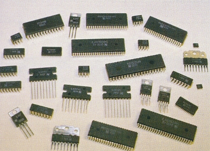

1.11.2. Интегральные микросхемы
Интегральная микросхема – твердотельное устройство, содержащее группу приборов и их соединения (связи), выполненное на единой пластине (подложке). В интегральных микросхемах (ИС) интегрируются пассивные элементы (ёмкости, сопротивления) и активные элементы, действие которых основано на различных физических явлениях. Внутренние связи ИС преобразуют множество приборов в функциональное устройство для целей информатики, преобразования различного видов энергии и робототехники. Создание первых полупроводниковых ИС (1958-59 гг) и начало их серийного выпуска (1960-61 гг) определили рождение микроэлектроники. Поскольку важнейшие ИС формируются на монокристаллической подложке, то электронное взаимодействие плотно упакованных микроприборов приводит к новым физ. явлениям. Развитие технологии ИС позволило создать такие устройства, в которых электронное взаимодействие охватывает группы транзисторов (интегральная инжекционная логика); приборы с зарядовой связью (ПЗС), где осуществляется передача электростатического заряда в цепях из тысяч МДП-элементов (МДП — металл-диэлектрик-полупроводник) приборы на цилиндрических магнитных доменаx, где осуществляется передача "магнитного заряда", и т. д.
Типы ИС
Важнейшие ИС – полупроводниковые, а среди них – кремниевые (Si). Физические и химические свойства Si, его оксида и нитрида, а также различных форм аморфного и поликристаллического Si создают оптимальную основу для интегральной технологии. Простота хим. состава обеспечивает стабильность и надёжность основанных на нём устройств. Свойства Si позволяют создавать различных датчики, исполнительные микромеханизмы и др. неэлектронные устройства с электронными информационно-управляющими системами. Кроме Si полупроводниковые ИС изготавливаются из GaAs и некоторых др. полупроводников. Это повышает быстродействие ИС (более высокая подвижность носителей заряда) и дополняет кремниевую электронику оптоэлектронными, в т. ч. лазерными, системами. ИС на переходах Джозефсона позволяют создавать устройства, потребляющие минимальное количество энергии на единицу перерабатываемой информации. Благодаря этому элементы могут быть более плотно упакованы, сокращается длина связей между ними, повышается быстродействие устройства. ИС на пьезоэлектрических кристаллах обеспечивают возможность параллельной быстрой обработки и преобразования некоторых видов сигналов. Однако ни один из перечисленных видов интегральных устройств не обладает универсальностью кремниевых ИС. Интегральная микросхема интегрирует в одном кристалле не только множество идентичных приборов, но и приборы, действие которых основано на различных принципах. Например, ИС для цифровой обработки данных могут содержать полевые и биполярные транзисторы, ИС для управления различными объектами или анализа сигналов могут объединить электронные, оптоэлектронные, электромеханические, магнитные и др. микроприборы.
Планарная технология
Полупроводниковые ИС формируются средствами Планарной технологии. В математике "планарность" означает геометрический образ, который можно нарисовать на плоскости без пересечения линий. Центральная идея планарной технологии состоит в том, что проект ИС представляется в виде комплекта рисунков, которые затем последовательно "переводятся" в кристалл с помощью различных физико-химических процессов (выращивание тонких плёнок металлов и полупроводников, их травление, введение легирующих примесей и т. п.). Планарная технология включает спец. методы проектирования ИС в виде комплекта плоских рисунков, микролитографию, которая позволяет осуществить их перенос на подложку, и методы, обеспечивающие изменение структуры или состава подложки по этим рисункам. С помощью планарной технологии можно одновременно формировать на подложке 1 000 – 100 000 000 транзисторов и осуществлять многостадийные процессы, а благодаря этому создавать ИС со сложной структурой. Таковы, например, микропроцессор – центральная часть ЭВМ, выполненная в одной или нескольких ИС; запоминающее устройство, содержащее свыше 1000000 ячеек памяти, и т. д. На одной подложке обычно формируется множество ИС. Затем она разделяется на отдельные кристаллики – "чипы" (англ, chip – отбитый кусок). Чип – это ИC без корпуса и внешних выводов. Его масса 0,5–50 мг, объём 0,2–50 мм3. Таким образом, на каждый мм3 чипа и на каждый мг его массы приходится 10 000 транзисторов. После установки чипа в корпус эти характеристики снижаются в сотни раз (из-за сравнительно больших габаритов и массы корпуса). Но чип может устанавливаться и без корпуса в аппаратуру и даже в организм человека (вживляемые кристаллы). С 80-х гг. интенсивно развивается технология твердотельных ИC на целых пластинах.
Гибридная технология
Гибридная технология объединяет принципы планарной технологии, с помощью которой предварительно формируются микроприборы, и плёночной технологии, средствами которой формируются пассивные элементы (сопротивления, конденсаторы, индуктивности) и сеть внутренних связей. В качестве подложки гибридной ИС, на которой устанавливаются бескорпусные чипы, используется диэлектрик, иногда металл или полупроводник, защищённые диэлектрическим слоем. Плёночная технология реализует принцип печатного монтажа в миниатюрном интегральном исполнении. Она расширяет диапазон параметров и повышает точность изготовления пассивных элементов. Поэтому она служит важным дополнением планарной технологии.
Степень интеграции
Важнейшая характеристика ИС – степень интеграции, т. е. число активных элементов (для определённости – транзисторов) в одной ИС.
В СССР были предложены следующие названия микросхем в зависимости от степени интеграции, разная для цифровых и аналоговых микросхем (указано количество элементов для цифровых схем): малая интегральная схема (МИС) — до 100 элементов в кристалле, средняя интегральная схема (СИС) — до 1000 элементов в кристалле, большая интегральная схема (БИС) — до 10000 элементов в кристалле, сверхбольшая интегральная схема (СБИС) — до 1 миллиона элементов в кристалле, ультрабольшая интегральная схема (УБИС) — до 1 миллиарда элементов в кристалле, гигабольшая интегральная схема (ГБИС) — более 1 миллиарда элементов в кристалле.
В настоящее время название УБИС и ГБИС практически не используется (например, последние версии процессоров Itanium, 9300 Tukwila, содержат два миллиарда транзисторов), и все схемы с числом элементов, превышающим 10 000, относят к классу СБИС, считая УБИС его подклассом. Максимально возможная (при данном уровне технологии) степень интеграции определяется прежде всего минимальной шириной линий рисунка ИС, ограниченной возможностью микролитографии. В современных ИС это 2 – 3 мкм, а в некоторых ИС достигается 1 мкм. В структурах, полученных с помощью острофокусированных электронных и ионных пучков, сформированы линии шириной до 2 нм. Оптимальный предел 0,1 – 0,2 мкм. Для его реализации необходимы коротковолновая фотолитография, рентгенолитографии, электронная и ионная микролитография. Кроме ширины линии, существенна максимально возможная площадь чипа, которая определяется качеством подложек и совершенством планарной технологии. Важную роль играет обеспечение надёжности – резервирование, самодиагностика и саморемонт. Они позволяют создавать устройства на частично дефектных и не вполне надёжных элементах. Предельная степень интеграции пластины – системы порядка 109. Степень интеграции можно увеличить последовательным формированием в одной ИC нескольких активных слоев (транзисторы и связи), разделённых диэлектрическими слоями. При этом для каждого активного слоя Si наносится в виде тонкой поликристаллической плёнки и подвергается рекристаллизационному отжигу. Трёхмерная интеграция позволяет повысить степень интеграции ещё на 1-2 порядка.
Степень интеграции и функциональные возможности интегральных микросхем ограничены сложностью их внутренней организации и потребляемой мощностью. Планарный принцип синтеза ограничивает число внутренних связей между элементами ИС. Это ограничение влияет на "архитектуру" интегральных устройств. Например, в едином устройстве можно осуществить только простейшие системы. В более сложных случаях требуется иерархическая организация структуры (в случае ЭВМ – многопроцессорная система с распределённой памятью). Локальная плотность потребляемой мощности, несмотря на низкое энергопотребление каждого транзистора, велика (иногда превышает плотность мощности на поверхности Солнца). Кроме того, при высоких плотностях тока из-за нестабильности тонкоплёночных проводников происходит увлечение ионов металла электронами или электрическим полем. Наиболее экономичны ИС на парах МОП-транзисторов, почти не потребляющие мощности между циклами переключения, а также на МДП-транзисторах с двухслойным диэлектриком (металл - нитрид - оксид - полупроводник), с плавающим затвором и др., которые не потребляют мощности в режиме хранения информации.
Развитие интегральной электроники
Уже первые МИС изменили принцип проектирования радиоэлектронной аппаратуры, особенно ЭВМ. Вместо конструирования устройств, измерения характеристик приборов и их взаимного согласования синтез стал осуществляться на логическом уровне. Согласование характеристик транзисторов перешло к технологии. Поскольку ИС, независимо от степени интеграции, стоят примерно столько же, сколько транзисторы домикроэлектронного периода, то стоимость ЭВМ снижается пропорционально степени интеграции. Однако в МИС интеграция распространилась в основном на цифровые логические схемы. Практически все МИС выполнялись на основе биполярных транзисторов. С переходом к БИС (60 - 70-е гг.) доминирующее место заняли полевые транзисторы с МДП-структурой. Они потребляют меньше энергии на каждый бит перерабатываемой информации и обладают более простой структурой, что позволило создать интегральные запоминающие устройства. Переход от БИС к СБИС (2-я пол. 70-х гг.) привёл к созданию 8-, 16- и 32-разрядных микропроцессоров и ИС с ёмкостью памяти 10000 - 1000000 бит. Выпускаются также БИС и СБИС для управления автомобильными двигателями, телевизорами (несколько кристаллов заменяют всю низковольтную аппаратуру телеприёмника) и т. д. Интенсивно развиваются аналоговые и цифроаналоговые БИС и СБИС, а также интегральная схемотехника СВЧ-диапазона. Интегральные микросхемы (ИС) позволяют упростить и усовершенствовать и механических системы (печатающие устройства, швейные машины, фотоаппараты и др.), в которых большинство механических узлов, выполняющих управляющие функции, могут быть заменены на БИС или СБИС. Проектирование самих ИС стало осуществляться с помощью систем автоматического проектирования (САПР), позволяющих формировать СБИС для конкретной задачи из базовых кристаллов, "библиотек" стандартных элементов, а также спец. сети внутренних связей. Кроме того, СБИС дают возможность создавать персональные ЭВМ. СБИС – одновременно и почти готовое вычислительное устройство, и элемент многопроцессорной ЭВМ позволяющей достичь производительности в 1010- 1011 операций в 1 секунду и осуществлять моделирование физических явлений.